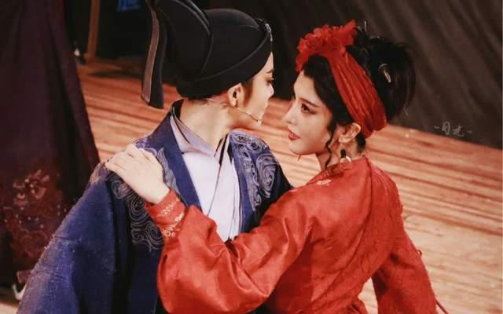

浙江小百花越剧团成立于1984年5月，设有企划营销部、艺术生产部和行政部，正式演职员为81人，其中专业人员中三分之二拥有国家正高级、副高级职称。剧团拥有自己的团刊《爱越世界》和爱越俱乐部。
大型古装戏《五女拜寿》
编剧：顾锡东。导演：张骏声（执行）、於爱如、王世菊。作曲：樊润河、何直伟。舞美设计：罗志摩。服装设计：余芳。化妆设计：蓝玲。
《汉宫怨》
编剧：顾锡东。导演：胡汝慧（执行）、胡其娴、金宝花、魏克玉。作曲：胡梦桥。配器：谈声贤。舞美设计：龚景充。服装、化妆设计：蓝玲。
《双玉蝉》
根据王行同名甬剧本改编。改编：魏峨、陈静。导演：陈静（执行）、汪世瑜、马佩玲。作曲：顾达昌。舞美设计：乐国庆。服装、化妆设计：蓝玲。
此外还有：《大观园》《唐伯虎落第》（拍成电影）、《相思曲》《陆游与唐琬》《红丝错》（拍成电影）、《西厢记》《胭脂》《蓦然又回首·茅威涛表演艺术专场》《南唐遗事》《琵琶记》《寒情》《白兔记》《汉武兴邦》等大戏及《楼台会》《何文秀·哭牌·算命》《王千金祭夫》《拾玉镯》《断桥》《二堂放子》《送花楼会》《露真》等多台折子戏。
最耀眼的是小生茅威涛，是三次“梅花奖”、“文华表演奖”与“白玉兰奖”得主，获浙江鲁迅文学艺术突出成就奖等多项荣誉，1998年被选为中国剧协副主席。
老生董柯娣也为“梅花奖”、“白玉兰奖”得主。
另有“梅花奖”得主陈辉玲和陶慧敏、方雪雯、何英、何赛飞、洪瑛、颜佳、江瑶、夏赛丽、何炯华、邵雁、黄依群、徐爱武、俞会珍、周美姣、吴春燕、陈伊娜及后起之秀蔡浙飞、魏春芳、孔立萍、周艳等，也具有相当的艺术实力并在观众中有一定影响，他们也分别荣获国家级或省级大奖。
新生代演员有陈丽君 、李云宵。
虽然历史不长，但浙江小百花越剧团却以它整齐的阵容从亮相依始就确立了它在越剧界甚至是整个戏剧界不可替代的位置。 该团在继承传统的基础上，博采众长，开拓创新，逐步形成了具有浓郁的江南气息的优美、抒情、清新、细腻的艺术特色，为国内外观众所瞩目。 剧团多台演出的演、编、导、音、美都多次获全国全省大奖。足迹遍及全国。 前后共五次赴香港、一次赴澳门、二次赴台湾；二次赴新加坡、一次赴泰国、二次赴日本、一次赴西欧4国、一次赴美国、一次赴韩国演出，受到国内外观众热烈赞誉。
2019年4月24日，第七届中国戏剧奖·梅花表演奖（第29届中国戏剧梅花奖）终审出炉，浙江小百花越剧团蔡浙飞演出的《飞·越》折子戏专场（《周仁哭坟》《春琴传》 《牡丹亭》《陆游与唐琬》）获戏曲类奖。